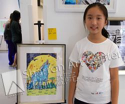

慈善画展感想
距离10月18日的画展已过去近2周，可是画展带来的那份满足和感恩却还常常在心中激荡。
墨非自7月参加美国莎伦画院（简称SAC）的暑期训练营后，给我们带来惊喜不断，让我们感受到了很多特别的第一次。她第一次可以安静投入地接受每天3小时的专业训练和刻苦学习。因为这份热爱和努力，绘画技艺有了飞跃式的提升，每一次完成的作品都让我们看到了她的突破和成长。她第一次参赛美国CELEBRATING ART 2015，因《荷》获奖并编入当年画册。她还第一次将自己的画作参加慈善画展并通过自己的艺术才华为慈善捐款添砖加瓦。
慈善画展全称为《莎伦画院=上海首届慈善画展》，是几位一起参加暑期绘画训练营的12年级优秀毕业生Nancy Lu、嘉琳、子欣发起的。她们倡议将本期训练营孩子们的画作收集起来，做一个慈善展出，希望可以通过画展筹得善款，并将筹得款项捐赠给两个慈善机构（GOOD ROCK基金和圆基金），以帮助偏远地区的孩子们过上更好的生活。
慈善画展的举办既可以让孩子又多了一次展示作品、又可以参与到慈善中去，一举两得。经过与孩子认真商议，我们送了4幅画参展，确定其中一幅参加拍卖。要知道，这些作品每一幅孩子都花了将近10小时绘制完成，每一次完成都是她努力和进步的见证，哪一幅离开我们，心中都有万分不舍。同时捐出爱心画作的还有Angel、盛浅雨。看来我们都在慈善面前而达成了一致。
画展的筹备工作非常繁琐和忙碌，经过筹备组的积极努力，通过大家的携手合作，10月18日慈善画展如期开展。虽然非处闹市，闻讯前来的观众却络绎不绝。每一次看到前来的观众对画展流露出的赞叹之情我们都十分骄傲，因为这是我们每一个学员的努力和协作的结果。当有观众在女儿的画作前驻足并啧啧称赞时，做父母的更是由衷的为她感到高兴。娇羞的孩子也顿时生出很多信心，那份信心是关于美的创作、关于艺术的想象。爸爸最终还是舍不得将画流出，自掏腰包买下了女儿的画，但这一切又都是那么自然而然的一件事。相信在孩子的心里，已经架起了一座联通艺术和慈善的桥。有爱有艺术的人生，才更完美。
期待下一届暑期夏令营的到来，也期待下一届慈善画展的开幕。（2015）